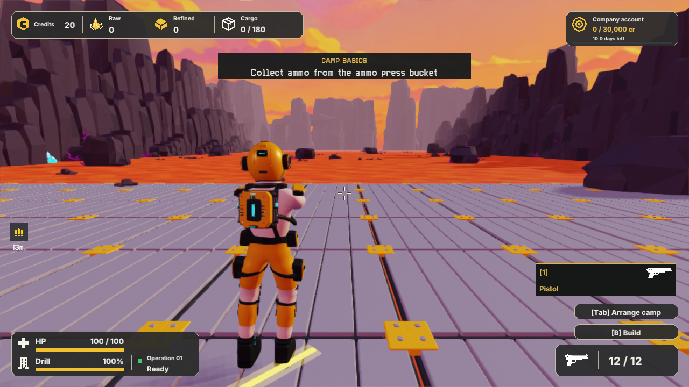
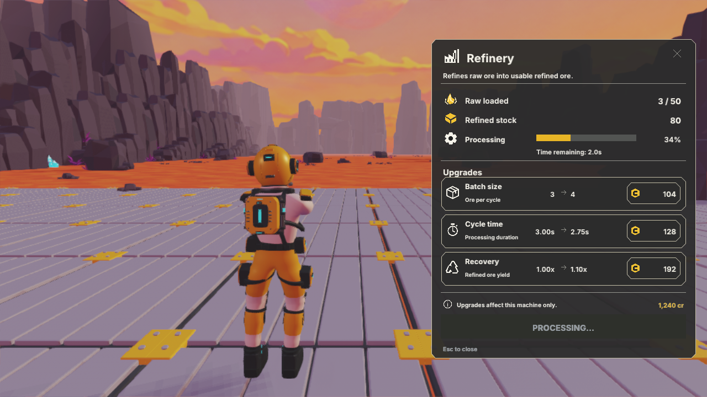
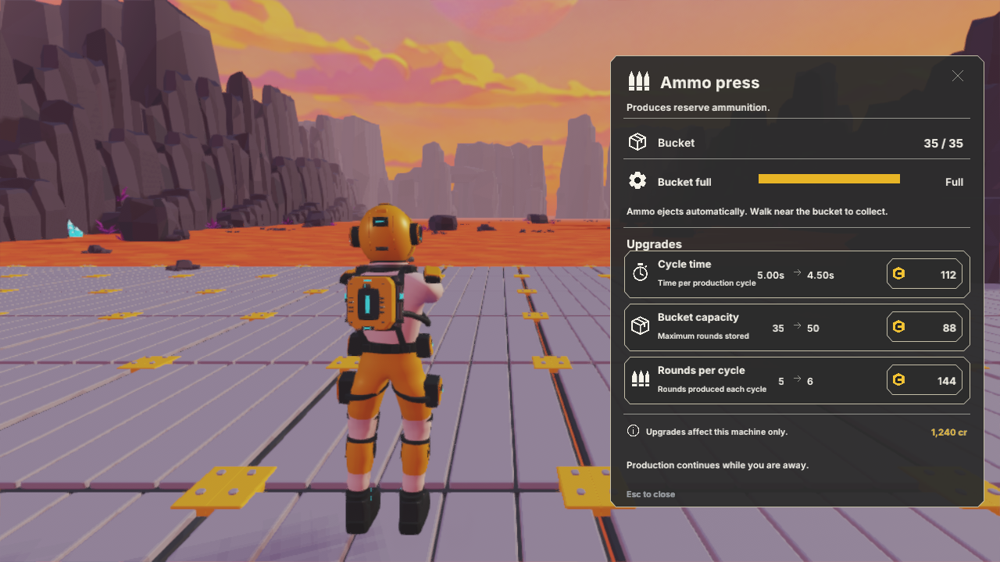
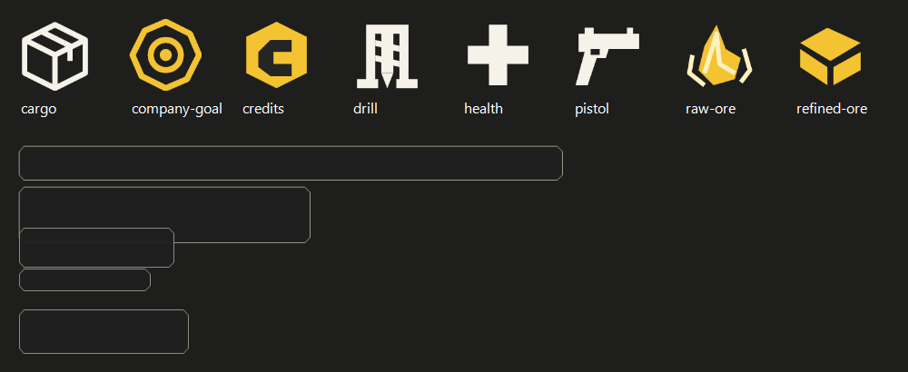

Original vector icons and clipped-corner borders rebuilt from the accepted Field Systems concept. The game uses live text with Inter 4.1 SemiBold and Bold. Inter is the closest verifiable match; the generated concept contains no embedded font identity. Fonts are distributed with their SIL Open Font License in the project SourceArt folder.
Disposable test state: the million-credit balance is test data, not a save change.




Editable SVG and runtime PNG files are beside this page. Gameplay values, company target and controls remain live.